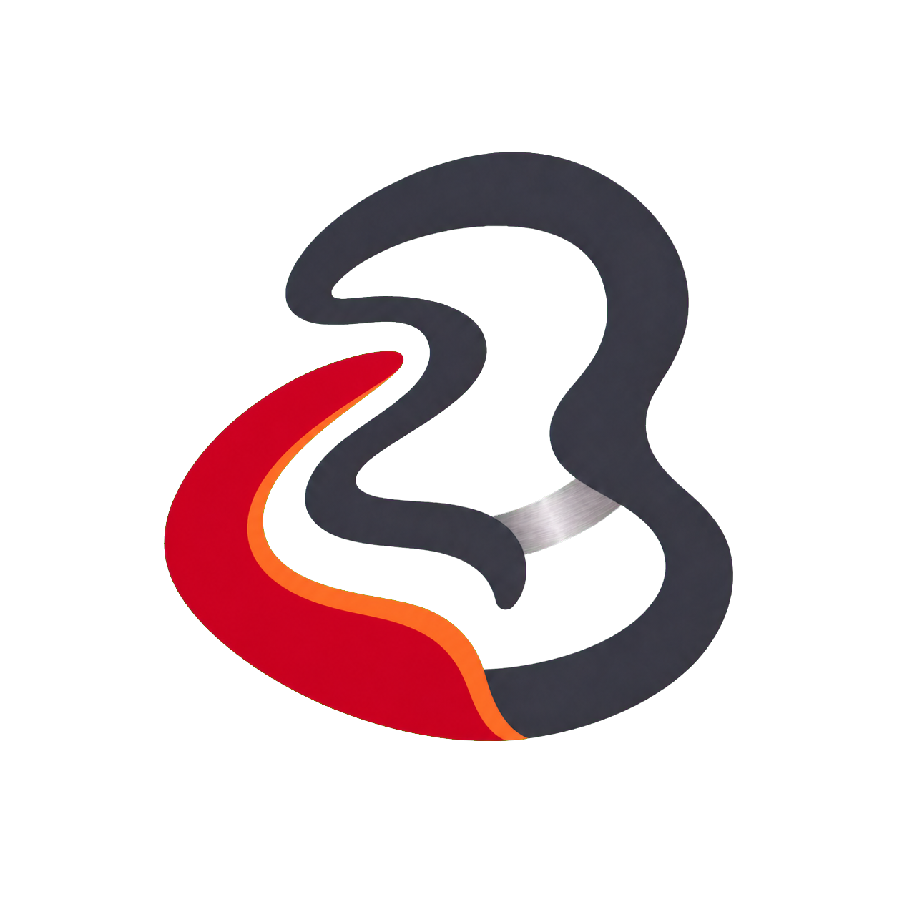

Living
Metal.
An offensive-security identity where Red Team Crimson sets urgency, Warm Ember carries progress, and gunmetal restores calm.
Think adversarially.
Move forward calmly.
Galio turns pentesting into an operating rhythm: test meaningful change, reproduce impact, retest fixes, and make progress visible.
Automation expands reconnaissance and repeatable coverage; experienced testers own scope, exploitation, evidence, severity, and every client-facing conclusion.
Simulate, don’t dramatize
Show attack paths, changed conditions, and verified impact. Avoid visual theater that makes security feel less credible.
Evidence before severity
Every risk state needs a reproduced condition, business consequence, owner, and next action.
Warmth shows progress
Crimson identifies active risk; Warm Ember shows remediation moving toward control, verification, and closure.
One testing standard
Galio Open receives the same human ownership, evidence depth, and retesting discipline as paid work.
Security should move with the systems it protects.
Galio exists to make offensive security keep pace with development. Software evolves continuously; its security cannot remain an isolated annual event. We bring both practices together so that every test becomes part of a longer cycle of learning, remediation, and stronger releases.
AI is the strongest tool we have to extend human capability—not a substitute for human judgment, ownership, or responsibility.
More security from the same budget
We use AI-assisted efficiency to provide three pentests and one authorized phishing simulation each year at a fee comparable to one regional point-in-time pentest. Access means sustained protection, not a lower professional standard.
Technology amplifies people
Automation expands reach, repetition, and speed. Skilled people remain accountable for scope, evidence, severity, context, and every conclusion a client receives.
Practice must keep advancing
We treat offensive security as a discipline to measure, reproduce, challenge, and improve. Research is not separate from delivery; it is how the standard of delivery moves forward.
Capability creates responsibility
Galio reserves full-standard, no-fee pentesting for selected nonprofit organizations with the greatest need. Selection may differ; professional rigor does not.
Red leads. Ember lifts.
Gray steadies.
ACTIVE RISK / 10%
PROGRESS / 6%
QUIET FIELD / 52%
SECONDARY DATA
TYPE + DEPTH / 24% COMBINED
PRIMARY READING PAIR
INVERSE PAIR
SECONDARY DATA
Verifiable claims.
ABCDEFGHIJKLMNOPQRSTUVWXYZ
abcdefghijklmnopqrstuvwxyz
0123456789 → ↗ / %
Headlines and the wordmark. Use tight, decisive settings; avoid distorted, coded, or faux-futurist display type.
Automation expands reconnaissance and repeatable checks. Senior testers own exploitability, evidence, severity, remediation context, and every final conclusion.
IBM PLEX MONO / EVIDENCE ID · TIMESTAMP · OWNER · STATE
Model risk.
Show progress.
Contours represent scope, change, attack paths, and improving states. Each layer needs a role; if a shape communicates nothing, remove it.
VERIFIED
QUIET FIELD
HISTORY + DATA
ATTACK SURFACE
PROGRESS
ACTIVE RISK
The outer contour and core use photographic metal or a tightly controlled metallic gradient—not flat silver.
Keep the visible sequence gunmetal → Warm Ember → crimson, with each band wide enough to read.
Use one dark neutral band. Let crimson and photographic metal carry the visual weight; never stack pale rings.
Evidence first.
Progress visible.
Use a 12-column grid. Brand-led pages may split five columns of content against seven columns of material; findings and reports prioritize evidence density instead.
BASE SPACING / 8PX · SECTION RHYTHM / 64–128PX
Test through change.
Scope meaningful releases. Reproduce impact. Retest until closed.
UI stays structural
Use 0–8px interface radii. Biomorphic curves belong to brand moments, not every control.
Color shows movement
Crimson means active risk; Ember means improving; gray means stable history or resolved state.
Space protects trust
Keep at least 30% quiet space in brand-led layouts and never place contours behind dense evidence.
Operational,
not cinematic.
Use real evidence, real tools, and real working sessions. Material studies are a branded layer—not a substitute for proof of how Galio tests.
ICON RULE / 24 OR 32PX GRID · 1.75PX GUNMETAL STROKE · SQUARE TERMINALS · CRIMSON ONLY FOR ACTIVE STATE
COOL METAL · CONTROLLED REFLECTION · DECISIVE CROP
- Redacted exploit evidence and annotated attack paths
- Candid tester, developer, and remediation sessions
- Real gallium only in brand-led compositions
- Labels tied to finding IDs, owners, and states
- Hoodies, locks, shields, green code walls
- Staged keyboards, threat theater, and fake terminals
- Pattern-only posts with no useful claim
- Staged charity or grateful-recipient imagery
Test through
change.
Automation expands coverage. Senior testers verify exploitability. Retesting turns risk into progress.
Evidence, then progress.
CRIMSON = ACTIVE RISK · EMBER = IMPROVING · METAL = VERIFIED · GUNMETAL = RESOLVED
Website
Lead with testing cadence, human ownership, and proof. Let Ember support hopeful outcomes and next steps.
Reports
Keep findings quiet. Crimson marks priority, Ember marks remediation progress, and metal marks evidence.
Social
Publish one useful claim, one evidence crop, and one constructive implication. Never post pattern-only filler.
Events
Use a large metal surface, one short claim, and a warm Ember transition toward the outcome.
Same standard.
Open access.
Professional fee for selected nonprofit engagements.
Free pentesting for selected nonprofits.
Selected organizations receive the same testing ownership, evidence standard, remediation context, and retesting discipline. Eligibility changes; quality does not.
Use the system,
not an approximation.
{kind=link}
{kind=link}

{kind=link}
{kind=link}
{kind=link}
PRODUCTION NOTE / AI-GENERATED MARKS ARE CREATIVE DIRECTIONS, NOT FINAL TRADEMARK ART. REDRAW THE SELECTED MARK AS CLEAN VECTOR GEOMETRY, TEST AT 16–32PX, AND COMPLETE TRADEMARK REVIEW BEFORE LAUNCH.
Test continuously.
Ship calmly.
Automation expands coverage. Experienced testers own the evidence, judgment, and path to closure.